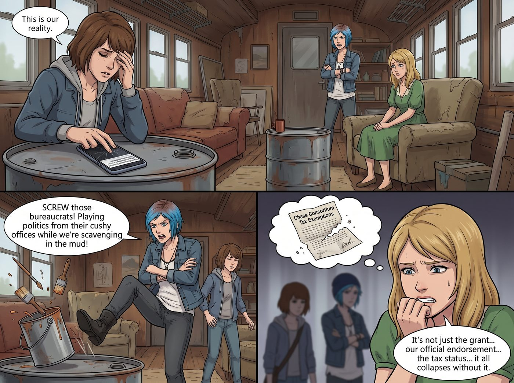

多元車廂的重新編碼

Max 將手機螢幕重重地拍在廢棄油桶改裝的茶几上，螢幕上赫然是一則令人啼笑皆非的頭條新聞。
「這就是我們面臨的現狀，」Max 揉著太陽穴，無奈地看著圍坐在二號車廂裡的眾人，「昨天下午，華盛頓州藝術委員會給我們的廢土文青藝術工坊發了預警郵件。他們說我們明年的五萬美金文化創新津貼可能要被砍掉，因為我們的核心成員構成——四個白人加一個亞裔混血——在他們最新的多元公平包容資源分配矩陣中，被判定為過度代表的優勢階級。」
Chloe 氣得一腳踹翻了旁邊的空油漆桶，破口大罵這群坐在辦公室裡玩弄政治正確標籤的官僚，完全無視她們是在奧林匹亞半島的泥巴地裡撿破爛搞藝術。Victoria 則在一旁焦慮地咬著指甲，這筆津貼雖然對 Chase 財團來說九牛一毛，但這是她們這個獨立畫廊目前唯一的合法官方背書，一旦被撤銷，後續的免稅資格也會跟著崩盤。
一、人口統計學的疊層遊戲
「他們想玩人口統計學的疊 Buff 遊戲？」
一直安靜坐在角落的實習生 Lily 合上了手裡的《聯邦預算審計指南》，推了推反光的圓框眼鏡。她的聲音依然軟糯，但熟悉她的人都知道，這代表著一場行政級別的降維屠殺即將開始。
Lily 走到白板前，拿起紅色麥克筆，開始對二號車廂的五名成員進行符合聯邦最高政治正確標準的重新編碼。
「首先，委員會的審查員犯了一個致命的官僚主義錯誤：他們只看了種族，而忽視了交叉性。」Lily 的麥克筆在白板上飛舞，「Price 學姐，從今天起，您在我們的官方文件上的身份不再是白人女性。您是曾遭受公立教育系統結構性排斥、身患未經診斷的注意力缺陷、長期處於低收入紅線以下、且積極投身於廢舊重工業材料回收的邊緣群體代表。」
Chloe 聽得目瞪口呆，嘴裡的棒棒糖都掉在了地上：「老天……這聽起來我簡直比悲慘世界的主角還要淒慘，但每一個字在法律上居然都是真的？！」
二、資本家的屈辱降級
Lily 沒有停頓，筆尖指向了已經開始流冷汗的 Victoria。
「Victoria 學姐，您的情況比較棘手，因為您的銀行帳戶餘額過於具有攻擊性。所以，我剛剛已經透過線上系統，將您在我們工坊的職位從投資人變更為無薪實習藝術總監。在州政府的稅務系統裡，您現在是一位拒絕繼承傳統父權資本、自願放棄薪水、試圖在偏遠生態脆弱區尋求精神療癒的青年女性。您的財富屬於信託，不屬於這間工坊。在這裡，您是零收入弱勢群體。」
Victoria 嘴角抽搐了一下，但為了保住畫廊的官方津貼，名媛屈辱地咽下了這口氣：「只要不讓我去大街上要飯，隨妳怎麼編。」
三、五角星的自我加冕
接著，Lily 將目光轉向了 Kate 和 Max。
「Kate 學姐是克服了極端保守宗教原生家庭精神迫害、致力於推廣動物與弱勢兒童心理健康的非暴力溝通倡導者。而 Max 學姐則是我們的核心——長期遭受創傷後壓力症候群折磨、依賴視覺藝術進行替代性心理治療的特殊需求藝術家。」
最後，Lily 在自己的名字旁邊畫了一個完美的五角星。
「至於我，身為這間工坊唯一的亞裔，我將向委員會提交一份長達八十頁的論述，證明我在這裡不是過度飽和的優勢學霸，而是對抗西方白人主導的行政霸權、深入基層為弱勢群體提供免費法律與稅務援助的有色人種勞工。」
Lily 放下麥克筆，轉過身，笑容純潔得宛如真正的天使：「學姐們，我已經將這份全新的《二號車廂多元文化與極端弱勢群體庇護所年度報告》發送給了州藝術委員會，並抄送給了西雅圖的幾家左翼平權媒體。只要他們敢砍掉我們這五個集合了全美最淒慘 Buff 的邊緣女孩的津貼，他們立刻就會面臨一場史詩級的公關災難與歧視訴訟。」
四、追加的三萬美金
三天後，華盛頓州藝術委員會不僅沒有撤銷那五萬美金的津貼，反而因為二號車廂那份堪稱 DEI 滿分教科書的報告，緊急追加了一筆三萬美金的特殊心理創傷藝術療癒專項基金。
當 Chloe 看著銀行帳戶裡多出來的錢時，她默默地走到 Lily 面前，雙手奉上一杯剛泡好的奶茶。而在這個充滿了魔幻官僚主義的西雅圖邊緣，這五個傢伙再次證明了一個真理：只要妳的行政魔法詠唱得足夠精準，哪怕妳是個開著越野車的財團千金，實習生也能在紙面上把妳包裝成需要全社會募捐的賣火柴的小女孩。